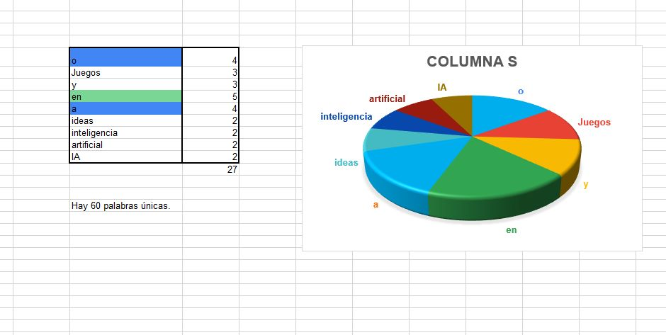
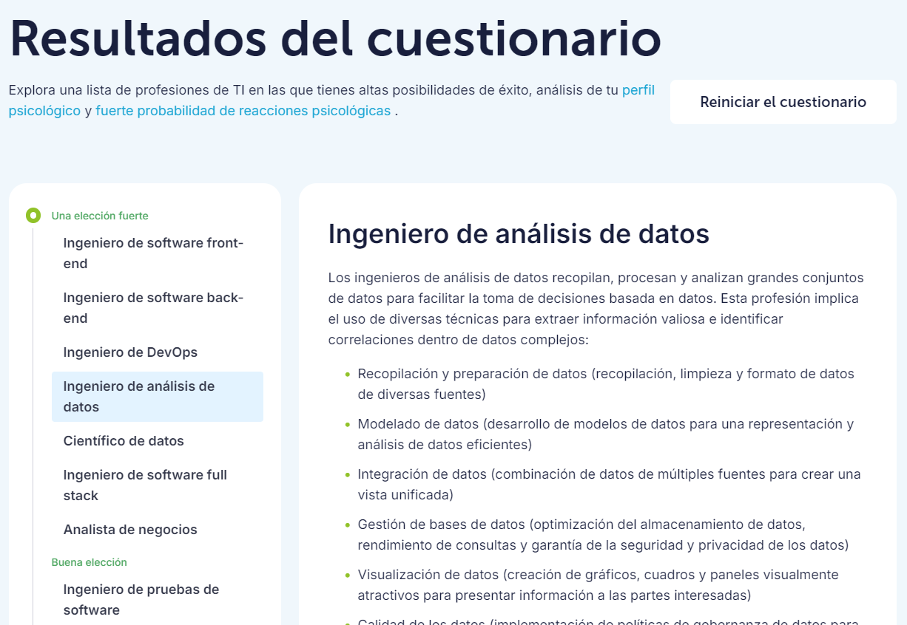

HOY APRENDIMOS TODOS LOS FUNDAMENTOS DE LO QUE SERIA INTELIGNCIA ARTIFICIAL

vimos que datos se repetían y buscamos graficar de cierto que nos brindara dicha información en una grafica de pastel

Se agruparon las actividades que eran similares y se contaron manualmente
Elegimos la columna número 5 y sacamos las palabras repetidas con la ayuda de chatGPT y las rectificamos manualmente e hicimos lo mismo con las palabras únicas (que no se repetían) Luego último hicimos la suma de las palabras repetidas y también sacamos el número de palabras únicas y por último hicimos un gráfico circular 3D con los números de las palabras repetidas

de manera manual tome los nombres de ias distintas y luego conté cuantas veces se repetía cada una, para al final juntar los valores y generar un anillo con Excel donde podemos ver que lo que vas se repite es chatgpt

yo utilice excel con formulas para sacar las palabras que estaban repetidas separando el texto y luego contando las palabras mas importantes de las inteligencias artificiales utilizando esta formula para contar las palabras que se repiten, SUMA(SI(NO(ESERROR(BUSCAR("chat"; A25:AY41)));1;0))+SUMA(SI(NO(ESERROR(BUSCAR("chat gpt"; A25:AY41)));1;0))

SE REALIZO UTILIZANDO FORMULA DE EXCEL Y TABLAS DINAMICAS.

David Sarria- Valentina Montealegre: Nos dimos cuenta que hay varias coincidencias y todas apuntan hacia el hecho de que todos contamos con habilidades blandas suficientes y exactas para llevar a cabo un excelente trabajo en equipo.

basicamente lo que hicimos fue indentificar, contar las palabras y finalmente estructuramos los resultados en una tabla de conteo que permite ver rápidamente la frecuencia de cada palabra y proporciona una vision general de los temas mas mencionados. los cuales son la inseguridad, contaminación y transporte
Basicamente lo que aprendi en esta clase es que Un algoritmo de inteligencia artificial es un conjunto de reglas y procesos diseñados para permitir que una máquina pueda aprender y tomar decisiones por sí misma sin la intervención humana.
algunos de los algoritmos de busquedas son :
BUSQUEDA EN APMPLITUD (BREADTH- FIRST SEARCH)
BUSQUEDA EN AMPLITUD (DEPTH-FIRTS SEARCH)
BUSQUEDA DE COSTO UNIFORME
BUSQUEDA VORAZ( GREEDY BEST-FIRST SEARCH)
REDES NEURONALES

PARCIAL 26/SETIEMBRE/2024
10/OCTUBRE/2024
https://drive.google.com/file/d/1L1ZNGGmR3ZAAEfzSkJMOiZBMpbuzfNIH/view?usp=sharing
Algunas de las carreras que me intereza son: Analistas de Control de Calidad, Administradores de Bases de Datos, Administradores de Redes Informáticas y Sistemas de Computación
|https://drive.google.com/file/d/1RQCNWzlPNBJ1Lb7ORzdM2MHOhh14tg2u/view?usp=drive_link

import itertools
class Sentence():
"""Clase base para todas las oraciones lógicas."""
def evaluate(self, model):
"""Evalúa la oración lógica."""
raise Exception("nothing to evaluate")
def formula(self):
"""Devuelve la fórmula en forma de cadena que representa la oración lógica."""
return ""
def symbols(self):
"""Devuelve un conjunto de todos los símbolos en la oración lógica."""
return set()
@classmethod
def validate(cls, sentence):
"""Valida que la oración sea una instancia de Sentence."""
if not isinstance(sentence, Sentence):
raise TypeError("must be a logical sentence")
@classmethod
def parenthesize(cls, s):
"""Asegura que una expresión esté entre paréntesis si no lo está ya."""
def balanced(s):
"""Verifica si una cadena tiene paréntesis balanceados."""
count = 0
for c in s:
if c == "(":
count += 1
elif c == ")":
if count <= 0:
return False
count -= 1
return count == 0
# Condiciones para no agregar paréntesis
if not len(s) or s.isalpha() or (
s[0] == "(" and s[-1] == ")" and balanced(s[1:-1])
):
return s
else:
return f"({s})"
class Symbol(Sentence):
"""Representa un símbolo lógico (variable)."""
def __init__(self, name):
self.name = name
def __eq__(self, other):
"""Compara si dos símbolos son iguales."""
return isinstance(other, Symbol) and self.name == other.name
def __hash__(self):
"""Devuelve un hash único para el símbolo."""
return hash(("symbol", self.name))
def __repr__(self):v
"""Devuelve una representación en cadena del símbolo."""
return self.name
def evaluate(self, model):
"""Evalúa el valor del símbolo en un modelo dado."""
try:
return bool(model[self.name])
except KeyError:
raise EvaluationException(f"variable {self.name} not in model")
def formula(self):
"""Retorna el nombre del símbolo como fórmula."""
return self.name
def symbols(self):
"""Devuelve un conjunto con el símbolo."""
return {self.name}
class Not(Sentence):
"""Representa la negación de una expresión lógica."""
def __init__(self, operand):
Sentence.validate(operand)
self.operand = operand
def __eq__(self, other):
"""Compara si dos negaciones son iguales."""
return isinstance(other, Not) and self.operand == other.operand
def __hash__(self):
"""Devuelve un hash único para la negación."""
return hash(("not", hash(self.operand)))
def __repr__(self):
"""Devuelve una representación en cadena de la negación."""
return f"Not({self.operand})"
def evaluate(self, model):
"""Evalúa la negación de la expresión."""
return not self.operand.evaluate(model)
def formula(self):
"""Devuelve la representación de la negación en forma de cadena."""
return "¬" + Sentence.parenthesize(self.operand.formula())
def symbols(self):
"""Devuelve los símbolos de la expresión negada."""
return self.operand.symbols()
class And(Sentence):
"""Representa una conjunción lógica (AND)."""
def __init__(self, *conjuncts):
for conjunct in conjuncts:
Sentence.validate(conjunct)
self.conjuncts = list(conjuncts)
def __eq__(self, other):
"""Compara si dos conjunciones son iguales."""
return isinstance(other, And) and self.conjuncts == other.conjuncts
def __hash__(self):
"""Devuelve un hash único para la conjunción."""
return hash(
("and", tuple(hash(conjunct) for conjunct in self.conjuncts))
)
def __repr__(self):
"""Devuelve una representación en cadena de la conjunción."""
conjunctions = ", ".join(
[str(conjunct) for conjunct in self.conjuncts]
)
return f"And({conjunctions})"
def add(self, conjunct):
"""Agrega un nuevo conjuncto a la conjunción."""
Sentence.validate(conjunct)
self.conjuncts.append(conjunct)
def evaluate(self, model):
"""Evalúa si todas las expresiones en la conjunción son verdaderas."""
return all(conjunct.evaluate(model) for conjunct in self.conjuncts)
def formula(self):
"""Devuelve la representación de la conjunción en forma de cadena."""
if len(self.conjuncts) == 1:
return self.conjuncts[0].formula()
return " ∧ ".join([Sentence.parenthesize(conjunct.formula())
for conjunct in self.conjuncts])
def symbols(self):
"""Devuelve todos los símbolos en la conjunción."""
return set.union(*[conjunct.symbols() for conjunct in self.conjuncts])
class Or(Sentence):
"""Representa una disyunción lógica (OR)."""
def __init__(self, *disjuncts):
for disjunct in disjuncts:
Sentence.validate(disjunct)
self.disjuncts = list(disjuncts)
def __eq__(self, other):
"""Compara si dos disyunciones son iguales."""
return isinstance(other, Or) and self.disjuncts == other.disjuncts
def __hash__(self):
"""Devuelve un hash único para la disyunción."""
return hash(
("or", tuple(hash(disjunct) for disjunct in self.disjuncts))
)
def __repr__(self):
"""Devuelve una representación en cadena de la disyunción."""
disjuncts = ", ".join([str(disjunct) for disjunct in self.disjuncts])
return f"Or({disjuncts})"
def evaluate(self, model):
"""Evalúa si al menos una expresión es verdadera."""
return any(disjunct.evaluate(model) for disjunct in self.disjuncts)
def formula(self):
"""Devuelve la representación de la disyunción en forma de cadena."""
if len(self.disjuncts) == 1:
return self.disjuncts[0].formula()
return " ∨ ".join([Sentence.parenthesize(disjunct.formula())
for disjunct in self.disjuncts])
def symbols(self):
"""Devuelve todos los símbolos en la disyunción."""
return set.union(*[disjunct.symbols() for disjunct in self.disjuncts])
class Implication(Sentence):
"""Representa una implicación lógica (=>)."""
def __init__(self, antecedent, consequent):
Sentence.validate(antecedent)
Sentence.validate(consequent)
self.antecedent = antecedent
self.consequent = consequent
def __eq__(self, other):
"""Compara si dos implicaciones son iguales."""
return (isinstance(other, Implication)
and self.antecedent == other.antecedent
and self.consequent == other.consequent)
def __hash__(self):
"""Devuelve un hash único para la implicación."""
return hash(("implies", hash(self.antecedent), hash(self.consequent)))
def __repr__(self):
"""Devuelve una representación en cadena de la implicación."""
return f"Implication({self.antecedent}, {self.consequent})"
def evaluate(self, model):
"""Evalúa la implicación lógica."""
return ((not self.antecedent.evaluate(model))
or self.consequent.evaluate(model))
def formula(self):
"""Devuelve la representación de la implicación en forma de cadena."""
antecedent = Sentence.parenthesize(self.antecedent.formula())
consequent = Sentence.parenthesize(self.consequent.formula())
return f"{antecedent} => {consequent}"
def symbols(self):
"""Devuelve todos los símbolos en la implicación."""
return set.union(self.antecedent.symbols(), self.consequent.symbols())
class Biconditional(Sentence):
"""Representa una bicondicional lógica (<=>)."""
def __init__(self, left, right):
Sentence.validate(left)
Sentence.validate(right)
self.left = left
self.right = right
def __eq__(self, other):
"""Compara si dos bicondicionales son iguales."""
return (isinstance(other, Biconditional)
and self.left == other.left
and self.right == other.right)
def __hash__(self):
"""Devuelve un hash único para la bicondicional."""
return hash(("biconditional", hash(self.left), hash(self.right)))
def __repr__(self):
"""Devuelve una representación en cadena de la bicondicional."""
return f"Biconditional({self.left}, {self.right})"
def evaluate(self, model):
"""Evalúa la bicondicional lógica."""
return ((self.left.evaluate(model)
and self.right.evaluate(model))
or (not self.left.evaluate(model)
and not self.right.evaluate(model)))
def formula(self):
"""Devuelve la representación de la bicondicional en forma de cadena."""
left = Sentence.parenthesize(str(self.left))
right = Sentence.parenthesize(str(self.right))
return f"{left} <=> {right}"
def symbols(self):
"""Devuelve todos los símbolos en la bicondicional."""
return set.union(self.left.symbols(), self.right.symbols())
def model_check(knowledge, query):
"""Verifica si la base de conocimientos implica la consulta."""
def check_all(knowledge, query, symbols, model):
"""Verifica si la base de conocimientos implica la consulta, dado un modelo particular."""
# Si el modelo tiene una asignación para cada símbolo
if not symbols:
# Si la base de conocimientos es verdadera en el modelo, entonces la consulta también debe ser verdadera
if knowledge.evaluate(model):
return query.evaluate(model)
return True
else:
# Elige uno de los símbolos restantes no utilizados
remaining = symbols.copy()
p = remaining.pop()
# Crea un modelo donde el símbolo es verdadero
model_true = model.copy()
model_true[p] = True
# Crea un modelo donde el símbolo es falso
model_false = model.copy()
model_false[p] = False
# Asegura que la implicación se mantiene en ambos modelos
return (check_all(knowledge, query, remaining, model_true) and
check_all(knowledge, query, remaining, model_false))
# Obtiene todos los símbolos en la base de conocimientos y la consulta
symbols = set.union(knowledge.symbols(), query.symbols())
# Verifica que la base de conocimientos implica la consulta
return check_all(knowledge, query, symbols, dict())
from logic import *
lluvia = Symbol("lluvia")
BBC = Symbol("BBC")
unimayor = Symbol("unimayor")
knowledge = And(
Implication(Not(lluvia), BBC),
Or(BBC, unimayor),
Not(And(BBC, unimayor)),
unimayor
)
print(model_check(knowledge, lluvia))